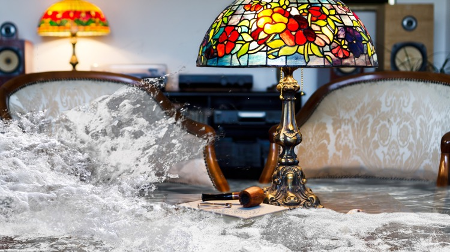

<!doctype html>
<html>
<head>
<meta charset="UTF-8">
<meta http-equiv="X-UA-Compatible" content="IE=edge">
<meta name="viewport" content="width=device-width, initial-scale=1">
<title>Aquasenso</title>
<!-- <link href="css/bootstrap.min.css" rel="stylesheet"> -->
<link href="css/bootstrap.min.css" rel="stylesheet">
<!--<link rel="stylesheet" href="css/owl.carousel.css">
<link rel="stylesheet" href="css/owl.theme.default.min.css">
-->
<link rel="stylesheet" href="owl-carousel/owl.carousel.css">
<link rel="stylesheet" href="owl-carousel/owl.theme.css">
<link rel="stylesheet" href="css/font-awesome.min.css">
<link rel="stylesheet" type="text/css" href="source/jquery.fancybox.css?v=2.1.5" media="screen" />
<link rel="stylesheet" href="css/style.css">
</head>
<body>
<header>
<div class="container navbar-fixed-top">
	<div class="row">
  <nav class="navbar navbar-default">
          <!-- Brand and toggle get grouped for better mobile display -->
      <div class="navbar-header">
        <button type="button" class="navbar-toggle collapsed" data-toggle="collapse" data-target="#defaultNavbar1"><span class="sr-only">Toggle navigation</span><span class="icon-bar"></span><span class="icon-bar"></span><span class="icon-bar"></span></button>
        <div class="navbar-brand" >
            <div class="circle-brand">
                <a href="index.html"> </a>
                <a href="http://kekelit.hu" target="_blank"></a>
            </div>
         </div>
      </div>
      <!-- Collect the nav links, forms, and other content for toggling -->
      <div class="collapse navbar-collapse" id="defaultNavbar1">
        <ul class="nav navbar-nav navbar-right">
          <li><a href="#link1" onclick="ga('send', 'event', 'menu', '3_prcenkent_1_vizkar');">3 percenként <span>1 vízkár<i class="fa fa-television" aria-hidden="true"></i>
</span><span class="sr-only">(current)</span></a></li>
          <li><a href="#link3">Aquasenso <span>rendszer<i class="fa fa-television" aria-hidden="true"></i></span></a></li>
          <li><a href="#link8">Rólunk <span>írták</span> </a></li>
          <li><a href="#link9">Információk <span>Árak, GYIK </span></a></li>
          <li><a href="#link6">Lépjen velünk <span>kapcsolatba</span></a></li>
        </ul>
      </div>
      <!-- /.navbar-collapse -->
    <!-- /.container-fluid -->
  </nav><!--nav-->
</div>
</div>
</header><!--header-->
<main>
<div class="container">
	<section class="row section-1"  id="link1">
    	<div class="col-xs-12 col-lg-12">
        	<h1 class="feeling-h1"><span>MAGYARORSZÁG:</span> 3 PERCENKÉNT 1 VÍZKÁR!</h1>
            <h2><span>Előzze meg!</span> <i class="header-brand"></i> intelligens vízvezeték-felügyeleti rendszer.</h2>
           <a class="fancybox fancybox.iframe" href="https://www.youtube.com/embed/pIINGUbhRVc?autoplay=1">  </a>

            </div>
    </section><!--section 1 -->
	<section class="row section-2"  id="link2">
    	<div class="col-xs-12 col-md-10 col-lg-10 center-block">
        	<h1>A lakáskárok 68%-át csőtörés okozza. <span>Előzze meg!</span></h1>
          <div class="owl-demo" >
                            <div class="item">
                            	<div class="col-xs-12  col-md-10 col-md-offset-1 col-lg-10 col-lg-offset-1  carousel-img">
                                     
                                     <p>Magyarország. 3 Percenként 1 vízkár. <span>Előzze meg!</span></p>
                                </div>
                            </div><!--item ends-->
                            <div class="item">
                            	<div class="col-xs-12  col-md-10 col-md-offset-1 col-lg-10 col-lg-offset-1  carousel-img">
                                     
                                     <p><span>Előzze meg</span> régi családi képei, a dédi kézzel írt szakácskönyve, bélyeggyűjteménye vagy értékes régiségei végleges megsemmisülését!</p>
                                </div>
                            </div><!--item ends-->
                            <div class="item">
                            	<div class="col-xs-12 col-md-10 col-md-offset-1 col-lg-10 col-lg-offset-1  carousel-img">
                                     
                                     <p><span>Előzze meg</span> régi családi képei, a dédi kézzel írt szakácskönyve, bélyeggyűjteménye vagy értékes régiségei végleges megsemmisülését!</p>
                                </div>
                            </div><!--item ends-->
                            <div class="item">
                            	<div class="col-xs-12 col-md-10 col-md-offset-1 col-lg-10 col-lg-offset-1  carousel-img">
                                     
                                     <p><span>Előzze meg</span> drága bútorai, értékes házimozi rendszere tönkremenetelét!</p>
                                </div>
                            </div><!--item ends-->
                            <div class="item">
                            	<div class="col-xs-12 col-md-10 col-md-offset-1 col-lg-10 col-lg-offset-1  carousel-img">
                                     
                                     <p><span>Előzze meg</span> minőségi burkolóanyaga felvésését, a hosszan tartó falszárítást és a kellemetlen biztosítási ügyintézést!</p>
                                </div>
                            </div><!--item ends-->
                            <div class="item">
                            	<div class="col-xs-12 col-md-10 col-md-offset-1 col-md-10 col-md-offest-1 col-lg-10 col-lg-offset-1  carousel-img">
                                     
                                     <p><span>Előzze meg</span> minőségi burkolóanyaga felvésését, a hosszan tartó falszárítást és a kellemetlen biztosítási ügyintézést!</p>
                                </div>
                            </div><!--item ends-->
                         </div>
        </div>
    </section><!--section 2 -->
	<section class="row section-3"  id="link3">
    	<div class="col-xs-12 col-lg-10 center-block">
        	<h1><span>Előzze meg!</span> A megoldás: <i class="header-brand"></i>intelligens vízvezeték-felügyeleti rendszer.</h1>
					<a class="fancybox fancybox.iframe" href="https://www.youtube.com/embed/75am_COSUf4?autoplay=1">  </a>
            <p class="double-margin-p">A vízvezeték rendszert alaphelyzetben zárva tartja, így a csőtörés és mosógép mosógép bekötés leszakadása távollétében nem okoz hihetetlen vízkárokat. Amikor hazaér, a mozgásérzékelők a fürdőben, konyhában, WC-ben jelzik az Ön jelenlétét. Ilyenkor a vezérlőegység rádiójel segítségével megnyitja a vízrendszerét. Néhány másodperc múlva a folyóvíz korlátozás nélkül rendelkezésre áll. Otthon tartózkodása alatt a vízérzékelő védi meg lakását a vízkároktól, például egy kádtúlengedés esetén. Amennyiben a mozgásérzékelő 30 percig nem ad jelet a vezérlőnek, a rendszer automatikusan lezárja a vízvezetékét. Gond nélkül utazhat el üdülni, illetve hagyhatja ott üdülőjét. </p>
        	<div class="col-xs-12 col-md-6 col-lg-6">
           			   <ul class="nav text-left">
                            <li><i></i>Vízvezeték-rendszerét automatikusan lezárja, ha:</li>
                            <li><i></i>nem érzékel a lakásában mozgást,</li>
                            <li><i></i>Ön elutazott,</li>
                            <li><i></i>Ön alszik,</li>
                            <li><i></i>hirtelen nyomásesést érzékel,</li>
                            <li><i></i>vizet érzékel a fürdő, a konyha padlóján.</li>
           			   </ul>
        	</div><!--left side-->
        	<div class="col-xs-12 col-md-6 col-lg-6">
           			   <ul class="nav text-left">
                            <li><i></i>Vízvezeték-rendszerét automatikusan megnyitja, ha:</li>
                            <li><i></i>mozgást érzékel a fürdőben, konyhában, WC-ben,</li>
                            <li><i></i>amennyiben mosogatógépe, mosógépe igényel.</li>
           			   </ul>
           			    </div><!--right side-->
        </div>
    </section><!--section 3 -->
	<section class="row section-4"  id="link4">
    	<div class="col-xs-12 col-lg-10 center-block">
        	<h1>Az <i class="header-brand"></i> rendszer vésés, bontás, <br>villanyszerelés nélkül telepíthető.</h1>
            <p class="double-margin-p">Új épületekbe és meglévő rendszerekhez is egyaránt könnyen telepíthető. A pincébe telepített vezérlő és a padlástérbe épített mozgásérzékelő tökéletesen kommunikál egymással. Áramszünetnél, meghibásodásnál manuálisan nyitható-zárható a vízrendszer.</p>
            <div class="owl-demo">
                <div class="item">
                   <div class="col-xs-12 col-md-6 col-lg-6 carousel-img">
           			   
                    </div>
                   <div class="col-xs-12  col-md-6 col-lg-6">
                         <h2>Jeladó típusok</h2>
                         <i class="icon-big icon-01">
                          </i>
                         <h5 class="text-left"> Mozgásérzékelők fürdőbe, konyhába, WC-be</h5>
                     <p  class="text-left">Mozgást érzékelve jelet ad a vezérlőnek, és a csapból már folyik is a víz, ha megnyitjuk. Elemekkel működik, nincs szükség falvésésre, vezetékekre. </p>
                         <i class="icon-01"></i>
                         <i class="icon-02"></i>
                   </div>
                </div><!--item ends-->
                <div class="item">
                   <div class="col-xs-12 col-md-6 col-lg-6 carousel-img">
           			   
                  </div>
                   <div class="col-xs-12  col-md-6 col-lg-6">
                         <h2>Jeladó típusok</h2>
                         <i class="icon-big icon-02">
                             
                          </i>
                         <i class="icon-big icon-03"> </i>
                         <h5 class="text-left">Vízérzékelők fürdőbe, konyhába</h5>
                         <p  class="text-left">A padlón vizet érzékelve vészjelzést ad a vezérlőnek, és automatikusan elzárja vizet. Téves riasztás esetén (pl: felmosás bő vízzel) egy gombnyomással törölhető a tiltás a vezérlőből, és a víz újra folyik a csapból. Szinte észrevétlenül elrejthető, csatlakoztatása egy áramforráshoz a fürdőben és konyhában nem okozhat gondot.</p>
                     <i class="icon-03"></i>
                  </div>
                </div><!--item ends-->
                <div class="item">
                   <div class="col-xs-12 col-md-6 col-lg-6 carousel-img">
           			   
                  </div>
                   <div class="col-xs-12  col-md-6 col-lg-6">
                         <h2>Jeladó típusok</h2>
                         <i class="icon-big icon-04"></i>
                         <i class="icon-big icon-05">
                             
                          </i>
                         <h5 class="text-left">Mosogatógép/mosógép készülékjelző</h5>
                         <p  class="text-left">A mosógép, mosogatógép abban az esetben is folytathatja beállított programját, ha elmegyünk otthonról. Amikor berendezésünk vizet kér, a készülékjelző a vezérlőn keresztül megnyitja számára a főcsapot. Szinte észrevétlenül elrejthető a berendezések mögé, és áramforráshoz való csatlakoztatáshoz is a készülékeké használható. </p>
                     <i class="icon-03"></i>
                  </div>
                </div><!--item ends-->
                <div class="item">
                   <div class="col-xs-12 col-md-6 col-lg-6 carousel-img">
           			   
                  </div>
                   <div class="col-xs-12  col-md-6 col-lg-6">
                    <h2>Vezérlőegység</h2>
             		<h5>Jelfogó vezérlőegység, golyóscsap, nyomásesés-érzékelő</h5>
                    <p>A golyóscsap és állítómotorja a vezérlővel van összekötve, és a jelzők utasítására nyitja/zárja a vízrendszert. A pincébe vagy a lakásunkba érkező fő nyomóvezetékhez kell elhelyezzük. A golyóscsap beépítését feltétlenül bízzuk szakemberre. A vezérlőt áramforráshoz kell csatlakoztassuk.</p>
                    <i class="icon-03"></i>
                  </div>
                </div><!--item ends-->
            </div><!--carusel ends-->
        </div>
    </section><!--section 4-->
	<section class="row section-8"  id="link8">
    	<div class="col-xs-12 col-lg-10 center-block">
        	<h1>Rólunk írták</h1>
             <div class="col-xs-12  col-md-3 col-lg-3">
             	<a href="images/section-8/szeplak_16-17_aquasenso_pr.pdf" target="_blank">
                   
                   <h3>SZÉPLAK<br>Vízkár kizárva</h3>
               </a>
             	<a href="images/section-8/szeplak_79_aqua_kirakatnezo.pdf" target="_blank">
                   
                   <h3>SZÉPLAK<br>Kirakatnéző</h3>
               </a>
             </div><!--left-->
             <div class="col-xs-12  col-md-3 col-lg-3">
	             <a href="images/section-8/Lakaskultura_kekelit.pdf" target="_blank">
	                
	                <h3>LAKÁSKULTÚRA<br>3 percenként 1 vízkár</h3>
	             </a>
							 <a href="images/section-8/Lakaskultura_dizajn-mozaik3.pdf" target="_blank">
	                
	                <h3>LAKÁSKULTÚRA<br>Dizájn Mozaik</h3>
	             </a>
							 <a href="images/section-8/LKaug-hirdetes.pdf" target="_blank">
									
									<h3>LAKÁSKULTÚRA<br>3 percenként 1 vízkár</h3>
							 </a>
             </div><!--middle-->
             <div class="col-xs-12  col-md-3 col-lg-3">
                 <a href="images/section-8/szephazak_Kekelit145jav.pdf" target="_blank">
                    
                    <h3>SZÉP HÁZAK <br>Vízvezeték-felügyelet</h3>
                 </a>
                 <a href="images/section-8/szephazak_Termekajanlo.pdf" target="_blank">
                    
                    <h3>SZÉP HÁZAK <br> Termékajánló</h3>
                 </a>
								 <a href="images/section-8/Kekelit-julius.pdf" target="_blank">
										
										<h3>SZÉP HÁZAK <br> Vízkár kizárva</h3>
								 </a>
             </div><!--middle-->
             <div class="col-xs-12  col-md-3 col-lg-3">
                 <a href="http://www.otthon.com/ihlet/praktikus/5014-intelligens-vizvezetek-felugyeleti-rendszer" target="_blank">
                    
                    <h3>OTTHON<br>Intelligens vízvezeték-felügyeleti rendszer</h3>
                </a>
             </div><!--right-->
        </div>
    </section><!--section 8 -->
	<section class="row section-9"  id="link9">
    	<div class="col-xs-12 col-lg-10 center-block">
        	<h1>Információk, árak, gyakran ismételt kérdések</h1>
             <div class="col-xs-12  col-md-2 col-md-offset-1 col-lg-2 col-lg-offset-1">
             	<a href="images/letoltesek/Aquasenso_szorofuzet.web_20160530.pdf" onclick="ga('send', 'event', 'letoltes', 'hasznalati_utasitas');" target="_blank">
                    <i class="fa fa-file-pdf-o" aria-hidden="true"></i>
                    <h6>Bemutató prospektus</h6>
                </a>
             </div><!--left-->
             <div class="col-xs-12  col-md-2 col-lg-2">
             	<a href="images/letoltesek/Aquasenso_hasznalati_utasitas_20160530.pdf" onclick="ga('send', 'event', 'letoltes', 'hasznalati_utasitas');" target="_blank">
                    <i class="fa fa-file-pdf-o" aria-hidden="true"></i>
                    <h6>Használati utasítás</h6>
                </a>
             </div><!--left-->
             <div class="col-xs-12  col-md-2 col-lg-2">
             	<a href="images/letoltesek/Aquasenso_muszaki_adatlap_20160530.pdf" onclick="ga('send', 'event', 'letoltes', 'hasznalati_utasitas');" target="_blank">
                    <i class="fa fa-file-pdf-o" aria-hidden="true"></i>
                    <h6>Műszaki leírás </h6>
               </a>
             </div><!--left-->
             <div class="col-xs-12  col-md-2 col-lg-2">
             	<a href="images/letoltesek/Aquasenso_arlista_20160530.xlsx" onclick="ga('send', 'event', 'letoltes', 'hasznalati_utasitas');" target="_blank">
                    <i class="fa fa-file-excel-o" aria-hidden="true"></i>
                    <h6>Árkalkulátor</h6>
             	</a>
             </div><!--right-->
             <div class="col-xs-12  col-md-2 col-lg-2">
             	<a href="images/letoltesek/Aquasenso_GYIK_k1.pdf" onclick="ga('send', 'event', 'letoltes', 'hasznalati_utasitas');" target="_blank">
                    <i class="fa fa-comments-o" aria-hidden="true"></i>
                    <h6>Gyakran ismételt kérdések</h6>
             	</a>
             </div><!--right-->
        </div>
    </section><!--section 8 -->
	<section class="row section-7"  id="link6">
    	<div class="col-xs-12 col-lg-10 center-block">
        	<h1>Értékesítés, kapcsolat</h1>
             <div class="col-xs-12 col-sm-12  col-md-12 col-lg-12 text-left">
             	<address>
                		 <h3>Gyártó, gyártói képviselet</h3>
                        <h6>KE KELIT Kunststoffwerk GesmbH. </h6>
                        <ul class="nav">
                            <li><i class="fa fa-map-marker" aria-hidden="true"></i><a href="https://www.google.hu/maps/place/Gyüép+Kft./@47.749433,18.5105365,14z/data=!4m12!1m6!3m5!1s0x476a5c486ad3e857:0xd6e2a90513b96e17!2zR3nDvMOpcCBLZnQu!8m2!3d47.749433!4d18.528046!3m4!1s0x476a5c486ad3e857:0xd6e2a90513b96e17!8m2!3d47.749433!4d18.528046" target="_blank">H-2120 Dunakeszi, Székesdűlő-Házgyár 0126/2.hrsz.</a></li>
                          	<li><i class="fa fa-phone" aria-hidden="true"></i>+36 27 542 399<br></li>
                            <li><i class="fa fa-envelope" aria-hidden="true"></i><a href="mailto:hungary@kekelit.com" onclick="ga('send', 'event', 'email', 'hungary@kekelit.com');">hungary@kekelit.com</a><br></li>
                        </ul>
              	</address>
             </div><!--four-->
             <div class="col-xs-12 col-sm-12  col-md-12 col-lg-12 text-left">
                 <h3>Értékesítési pontok</h3>
             </div>
             <div class="col-xs-12 col-sm-3  col-md-3 col-lg-3 text-left">
             	<address>
                        <h6>AQUAMART BUDA</h6>
                        <ul class="nav">
                            <li><i class="fa fa-map-marker" aria-hidden="true"></i><a href="https://www.google.hu/maps/place/Budapest,+Perc+u.+8,+1036/@47.5368042,19.0381207,17z/data=!3m1!4b1!4m5!3m4!1s0x4741d95ead0b32e5:0xc3bcb92be7539ff8!8m2!3d47.5368042!4d19.0403094?hl=en" target="_blank">1036 Budapest, Perc utca 8. </a></li>
                            <li><i class="fa fa-phone" aria-hidden="true"></i>+36 1 870 0448<br>+36 30 327 3987<br>+36 30 723 2518<br>+36 30 649 7332</li>
                            <li><i class="fa fa-envelope" aria-hidden="true"></i><a href="mailto:aquabuda@mart.hu">aquabuda@mart.hu</a></li>
                        </ul>
                        <h6>AQUAMART BUDAÖRS</h6>
                        <ul class="nav">
                            <li><i class="fa fa-map-marker" aria-hidden="true"></i><a href="https://goo.gl/maps/7tXSsnm17mu" target="_blank">2040 Budaörs, Építők útja 2-4.</a><br></li>
                        	  <li><i class="fa fa-phone" aria-hidden="true"></i>+36 23 414 199<br>+36 30 536 8883<br>+36 30 389 0773<br>+36 30 327 7465</li>
                        	  <li><i class="fa fa-envelope" aria-hidden="true"></i><a href="mailto:aquabudaors@mart.hu">aquabudaors@mart.hu</a><br></li>
                        </ul>
              	</address>
             </div><!--four-->
             <div class="col-xs-12 col-sm-3  col-md-3 col-lg-3  text-left">
             	<address>
                    <h6>AQUAMART NYÍREGYHÁZA</h6>
                    <ul class="nav">
                      <li><i class="fa fa-map-marker" aria-hidden="true"></i><a href="https://www.google.hu/maps/place/Ny%C3%ADregyh%C3%A1za,+Debreceni+%C3%BAt+138,+4405/@47.930827,21.7167483,17z/data=!3m1!4b1!4m5!3m4!1s0x47389fd5e5aa7277:0x50d67fbcc999a84e!8m2!3d47.930827!4d21.718937" target="_blank">4400 Nyíregyháza, Debreceni út 138. </a><br></li>
                      <li><i class="fa fa-phone" aria-hidden="true"></i>+36 42 596 777<br>+36 42 596 778<br>+36 30 217 3383<br>+36 30 562 7711</li>
                      <li><i class="fa fa-envelope" aria-hidden="true"></i><a href="mailto:aquanyiregyhaza@mart.hu">aquanyiregyhaza@mart.hu</a></li>
                    </ul>
                    <h6>AQUAMART SZÉKESFEHÉRVÁR</h6>
                    <ul class="nav">
                      <li><i class="fa fa-map-marker" aria-hidden="true"></i> <a href="https://www.google.hu/maps/place/Székesfehérvár,+Balatoni+út+44,+8000/@47.1652873,18.4012308,17z/data=!3m1!4b1!4m5!3m4!1s0x4769f71659b5d00b:0x8f38d86eb4f7ed5a!8m2!3d47.1652873!4d18.4034195" target="_blank">8000 Székesfehérvár, <br> Balatoni út 44-46.</a><br></li>
                      <li><i class="fa fa-phone" aria-hidden="true"></i>+36 22 880 558<br>+36 30 820 7752<br>+36 30 649 8323</li>
                      <li><i class="fa fa-envelope" aria-hidden="true"></i><a href="mailto:aquaszekesfehervar@mart.hu">aquaszekesfehervar@mart.hu</a><br></li>
                    </ul>
              	</address>
             </div><!--four-->
             <div class="col-xs-12 col-sm-3  col-md-3 col-lg-3  text-left">
             	<address>
                    <h6>AQUAMART PEST</h6>
                    <ul class="nav">
                        <li><i class="fa fa-map-marker" aria-hidden="true"></i><a href="https://www.google.hu/maps/place/Aqua+Mart/@47.5430973,19.0727255,14z/data=!4m8!1m2!2m1!1sAQUAMART+PEST!3m4!1s0x4741dbccfd58da51:0x97a4514d8a9a3d9b!8m2!3d47.5535825!4d19.0780914?hl=en" target="_blank">1138 Budapest, <br>Madarász Viktor u. 47-49.</a></li>
                        <li><i class="fa fa-phone" aria-hidden="true"></i>+36 1 882 7303<br>
                      +36 1 882 7304 <br> +36 1 882 7306<br> +36 30 649 7487<br>+36 30 649 8348<br>+36 30 327 3527</li>
                        <li><i class="fa fa-envelope" aria-hidden="true"></i><a href="mailto:aquabudapest@mart.hu">aquabudapest@mart.hu</a></li>
                    </ul>
                    <h6>AQUAMART DUNAKESZI</h6>
                    <ul class="nav">
                        <li><i class="fa fa-map-marker" aria-hidden="true"></i><a href="https://www.google.hu/maps/place/Aqua+Mart/@47.5535825,19.0759027,17z/data=!4m12!1m6!3m5!1s0x4741dbccfd58da51:0x97a4514d8a9a3d9b!2sAqua+Mart!8m2!3d47.5535825!4d19.0780914!3m4!1s0x4741dbccfd58da51:0x97a4514d8a9a3d9b!8m2!3d47.5535825!4d19.0780914" target="_blank">2120 Dunakeszi, Székesdűlő-Házgyár 8028 hrsz.</a></li>
                        <li><i class="fa fa-phone" aria-hidden="true"></i>+36 27 542 236<br>+36 27 542 246 <br> +36 27 546 900 <br>+36 30 319 4041<br>+36 30 450 9449</li>
                        <li><i class="fa fa-envelope" aria-hidden="true"></i><a href="mailto:aquadunakeszi@mart.hu">aquadunakeszi@mart.hu</a></li>
                    </ul>
              	</address>
             </div><!--four-->
             <div class="col-xs-12 col-sm-3  col-md-3 col-lg-3  text-left">
             	<address>
                    <h6>AQUAMART NAGYKANIZSA</h6>
                    <ul class="nav">
                        <li><i class="fa fa-map-marker" aria-hidden="true"></i><a href="https://www.google.hu/maps/place/MART+Kft./@46.4329463,16.9856085,17z/data=!3m1!4b1!4m5!3m4!1s0x476893b947c4ffbb:0x8b5d997f27c1187b!8m2!3d46.4329463!4d16.9878025?hl=en" target="_blank">8800 Nagykanizsa, Csengery út 113/a.</a></li>
                        <li><i class="fa fa-phone" aria-hidden="true"></i>+36 93 510 223 <br> +36 93 510 224<br>+36 30 497 2172</li>
                        <li><i class="fa fa-envelope" aria-hidden="true"></i><a href="mailto:aquanagykanizsa@mart.hu">aquanagykanizsa@mart.hu</a></li>
                    </ul>
                    <h6>AQUAMART GYŐR</h6>
                    <ul class="nav">
                        <li><i class="fa fa-map-marker" aria-hidden="true"></i><a href="https://www.google.hu/maps/place/Győr,+Csipkegyári+út+11,+9025/@47.67595,17.6144287,18z/data=!4m5!3m4!1s0x476bbfff935cda35:0xba75b65042543be1!8m2!3d47.67595!4d17.615523" target="_blank">9025 Győr, Csipkegyári út 11.</a></li>
                        <li><i class="fa fa-phone" aria-hidden="true"></i>+36 99 887 578 <br> +36 30 338 5870 <br>+36 30 195 5364</li>
                        <li><i class="fa fa-envelope" aria-hidden="true"></i><a href="mailto:aquagyor@mart.hu">aquagyor@mart.hu</a></li>
                    </ul>
              	</address>
             </div><!--four-->
             <div class="col-xs-12 col-sm-12  col-md-12 col-lg-12 text-left">
                 <h3>Ajánlott szerelők</h3>
                 <h6>Feltöltés alatt</h6>
             </div>
        <div class="col-xs-12 col-lg-12 center-block text-left">
             <h2>További innovatív találmányok a KE KELIT-től: <br>
						<i class="fa fa-external-link" aria-hidden="true"></i> <a href="http://www.kekelit.hu" target="_blank">www.kekelit.hu</a></h2>
        </div>
        </div>
    </section><!--section 7 -->
	<footer class="row section-6 text-left">
    <div class="col-xs-12">
    	<div class="col-xs-12  col-md-4 col-md-offset-1 col-lg-3 col-lg-offset-1">
            <a href="http://www.kekelit.hu/" target="_blank"></a>
        </div>
    	<div class="col-xs-12  col-md-3 col-lg-3 col-lg-offset-1 ">
        	<p>Kunststoffwerk GesmbH.<br>
                 <a href="https://www.google.hu/maps/place/Gyüép+Kft./@47.749433,18.5105365,14z/data=!4m12!1m6!3m5!1s0x476a5c486ad3e857:0xd6e2a90513b96e17!2zR3nDvMOpcCBLZnQu!8m2!3d47.749433!4d18.528046!3m4!1s0x476a5c486ad3e857:0xd6e2a90513b96e17!8m2!3d47.749433!4d18.528046" target="_blank">   H-2120 Dunakeszi,<br>
                    Székesdűlő-Házgyár 0126/2.hrsz.</a></p>
        </div>
    	<div class="col-xs-12  col-md-4 col-lg-4 text-left">
        	<p>Telefon: +36 27 542 399<br>
                    Email: <a href="mailto:hungary@kekelit.com" onclick="ga('send', 'event', 'email', 'hungary@kekelit.com');">hungary@kekelit.com</a><br>
                    Web: <a href="http://www.aquasenso.hu">www.aquasenso.hu</a>, <a href="http://www.kekelit.hu" target="_blank">www.kekelit.hu</a></p>
        </div>
    	</div>
    </footer><!--section 6 -->
</div><!--container-->
</main><!--main-->
<!-- jQuery (necessary for Bootstrap's JavaScript plugins) -->
<script src="js/respond.js"></script>
<!-- <script src="js/bootstrap.min.js"></script> -->
<script src="js/bootstrap-3.3.4.js" type="text/javascript"></script>
<script type="text/javascript" src="js/TweenMax.min.js"></script>
<script type="text/javascript" src="js/jquery.scrollmagic.min.js"></script>
<script src="js/owl.carousel.js"></script>
<script type="text/javascript" src="source/jquery.fancybox.js?v=2.1.5"></script>
<script src="js/script.js"></script>
<script src="http://localhost:35729/livereload.js"></script>
<script>
  (function(i,s,o,g,r,a,m){i['GoogleAnalyticsObject']=r;i[r]=i[r]||function(){
  (i[r].q=i[r].q||[]).push(arguments)},i[r].l=1*new Date();a=s.createElement(o),
  m=s.getElementsByTagName(o)[0];a.async=1;a.src=g;m.parentNode.insertBefore(a,m)
  })(window,document,'script','https://www.google-analytics.com/analytics.js','ga');

  ga('create', 'UA-83416826-1', 'auto');
  ga('require', 'displayfeatures');
  ga('send', 'pageview');
</script>
<script src="js/jquery.scrolldepth.min.js"></script>
<script>
jQuery(function() {
  jQuery.scrollDepth();
});
</script>
</body>
</html>
